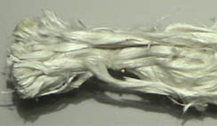
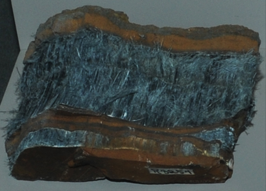
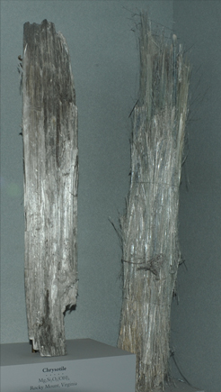
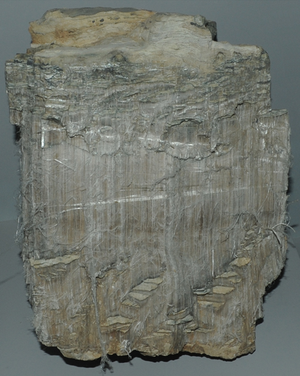
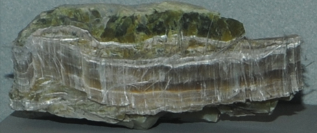
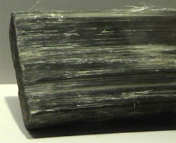
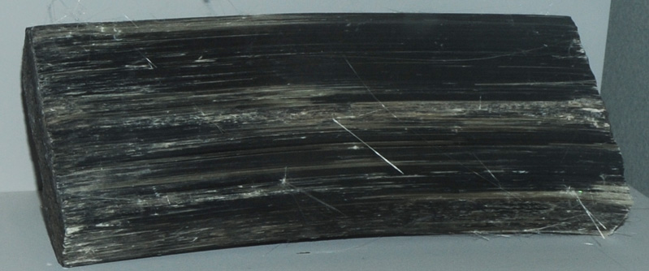

Tremolite
|

|
This sample of tremolite is displayed in the Smithsonian Museum of Natural History. Tremolite is a fibrous mineral, one of those which were given the commercial name asbestos. These materials are silicates which contain magnesium and iron. Tremolite has the composition Ca2(Mg,Fe)5Si8O22(OH)2. This sample is about 15x3 cm and is from Corse, France.
|
These samples of tremolite show that it has other habits of formation other than the fibrous one. The sample above left is about 8x8 cm and is from Wilberforce Township, Ontario, Canada. The single crystal above right is about 1.5x5 cm and is from Tanzania. The sample below left is about 15x5 cm and is from Macomb, New York. The sample below left is about 5x6 cm and is from Gouverneur, New York.
Riebeckite

Riebeckite is a fibrous mineral, one of those which were given the commercial name asbestos. These samples are of the variety crocidolite.
|

|
These materials are silicates which contain magnesium and iron. Riebeckite has the composition Na2(Fe,Mg)3Fe2Si8O22(OH)2. The sample above left is about 13x5 cm and is from Carn Brea mine, Prieska district, Cape Province, South Africa. The sample at right, above and below, was formed as a long, solid bundle of bluish fibers about 4x25 cm. It is from Todos Santos, Cochabamba, Bolivia. The sample below left was about 6x25cm and was also from Bolivia.
Chrysotile
Mg3Si2O5(OH)4

| Chrysotile is another fibrous mineral, one of those which were given the commercial name asbestos. The sample at left is like a dense mat of vertical fibers. It is about 15x6 cm and is from Arizona. Chrysotile has the composition Mg3Si2O5(OH)4.
|
|  The left sample above is a 10x50 cm vertical column from Rocky Mount,Virginia. The right sample is a loose 10 x 60 cm bundle of fibers from Canadian Johns Mansville mine, Quebec, Canada.
The sample of chrysotile at right is about 25x30 cm in size and is from Sierra Ancha Mountains, Gila County, Arizona. |  |

| This sample is described as chrysotile with lizardite. It is about 12 cm wide and is from Montville, New Jersey.
Mindat: Chrysotile
|
Grunerite

| (Mg,Fe)7Si8O22(OH)2
Grunerite is another fibrous mineral, one of those which were given the commercial name asbestos. The sample at left and below is a dense column of fibers about 20x8 cm and is from South Africa. It is labeled grunerite of variety amosite. Grunerite has the composition (Mg,Fe)7Si8O22(OH)2 .
Mindat: Grunerite
|

|
Index |